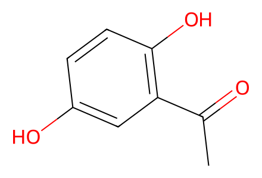
CC(=O)c1cc(O)ccc1OArticle Scheme 2 and Figure 3 forward network, including both alternative routes, isolated regioisomers, inseparable tautomer pair and water-dependent quinone 32. Model study Figure 2/SI S3-S10 includes all 16 products and substrate preparations. Proposed biogenesis and transient mechanistic structures are not isolated reaction steps. Facts compiled deterministically; independent review pending.
完整 JSON · 逐步 CSV · 路线序列 · SDF · HRMS 核对
| 事件 | 分子连接 | 报告产率 | Canonical reaction SMILES |
|---|---|---|---|
| M01 | S1 → S2 | S2: 65% | CC(=O)c1cc(O)ccc1O>>CC(=O)C1=CC(=O)C=CC1=O |
| M02 | S2 + MeOH → 9 | 9: 64% | CC(=O)C1=CC(=O)C=CC1=O.CO>>COc1c(O)ccc(O)c1C(C)=O |
| M03 | 9 → 10 | 10: 60% | COc1c(O)ccc(O)c1C(C)=O>>CC(=O)c1c(O)ccc(O)c1O |
| M11A | 9 + glycine → 11A | 11A: 62% | COc1c(O)ccc(O)c1C(C)=O.NCC(=O)O>>CC(=O)c1c(O)ccc2ocnc12 |
| M11B | 10 + glycine → 11B | 11B: 55% | CC(=O)c1c(O)ccc(O)c1O.NCC(=O)O>>CC(=O)c1c(O)ccc2ncoc12 |
| M12A | 9 + L-alanine → 12A | 12A: 60% | COc1c(O)ccc(O)c1C(C)=O.C[C@H](N)C(=O)O>>CC(=O)c1c(O)ccc2oc(C)nc12 |
| M12B | 10 + L-alanine → 12B | 12B: 51% | CC(=O)c1c(O)ccc(O)c1O.C[C@H](N)C(=O)O>>CC(=O)c1c(O)ccc2nc(C)oc12 |
| M13A | 9 + L-isoleucine → 13A | 13A: 66% | CC[C@H](C)[C@H](N)C(=O)O.COc1c(O)ccc(O)c1C(C)=O>>CC[C@H](C)c1nc2c(C(C)=O)c(O)ccc2o1 |
| M13B | 10 + L-isoleucine → 13B | 13B: 57% | CC(=O)c1c(O)ccc(O)c1O.CC[C@H](C)[C@H](N)C(=O)O>>CC[C@H](C)c1nc2ccc(O)c(C(C)=O)c2o1 |
| M14A | 9 + L-2-aminoheptanoic-acid → 14A | 14A: 61% | CCCCC[C@H](N)C(=O)O.COc1c(O)ccc(O)c1C(C)=O>>CCCCCc1nc2c(C(C)=O)c(O)ccc2o1 |
| M14B | 10 + L-2-aminoheptanoic-acid → 14B | 14B: 54% | CC(=O)c1c(O)ccc(O)c1O.CCCCC[C@H](N)C(=O)O>>CCCCCc1nc2ccc(O)c(C(C)=O)c2o1 |
| M15A | 9 + L-phenylalanine → 15A | 15A: 55% | COc1c(O)ccc(O)c1C(C)=O.N[C@@H](Cc1ccccc1)C(=O)O>>CC(=O)c1c(O)ccc2oc(Cc3ccccc3)nc12 |
| M15B | 10 + L-phenylalanine → 15B | 15B: 53% | CC(=O)c1c(O)ccc(O)c1O.N[C@@H](Cc1ccccc1)C(=O)O>>CC(=O)c1c(O)ccc2nc(Cc3ccccc3)oc12 |
| M16A | 9 + L-homophenylalanine → 16A | 16A: 59% | COc1c(O)ccc(O)c1C(C)=O.N[C@@H](CCc1ccccc1)C(=O)O>>CC(=O)c1c(O)ccc2oc(CCc3ccccc3)nc12 |
| M16B | 10 + L-homophenylalanine → 16B | 16B: 57% | CC(=O)c1c(O)ccc(O)c1O.N[C@@H](CCc1ccccc1)C(=O)O>>CC(=O)c1c(O)ccc2nc(CCc3ccccc3)oc12 |
| M17A | 9 + L-valine → 17A | 17A: 80% | CC(C)[C@H](N)C(=O)O.COc1c(O)ccc(O)c1C(C)=O>>CC(=O)c1c(O)ccc2oc(C(C)C)nc12 |
| M17B | 10 + L-valine → 17B | 17B: 59% | CC(=O)c1c(O)ccc(O)c1O.CC(C)[C@H](N)C(=O)O>>CC(=O)c1c(O)ccc2nc(C(C)C)oc12 |
| M18A | 9 + L-leucine → 18A | 18A: 74% | CC(C)C[C@H](N)C(=O)O.COc1c(O)ccc(O)c1C(C)=O>>CC(=O)c1c(O)ccc2oc(CC(C)C)nc12 |
| M18B | 10 + L-leucine → 18B | 18B: 58% | CC(=O)c1c(O)ccc(O)c1O.CC(C)C[C@H](N)C(=O)O>>CC(=O)c1c(O)ccc2nc(CC(C)C)oc12 |
| N1 | 31B + glycine → 1 | 1: 60% | COC1=C(C)C(=O)C(C(=O)CCc2ccccc2)=C(O)C1=O.NCC(=O)O>>COc1c(C)c(O)c(C(=O)CCc2ccccc2)c2ocnc12 |
| N2 | 31B + L-alanine → 2 | 2: 67% | COC1=C(C)C(=O)C(C(=O)CCc2ccccc2)=C(O)C1=O.C[C@H](N)C(=O)O>>COc1c(C)c(O)c(C(=O)CCc2ccccc2)c2oc(C)nc12 |
| N3 | 31B + L-phenylalanine → 3 | 3: 65% | COC1=C(C)C(=O)C(C(=O)CCc2ccccc2)=C(O)C1=O.N[C@@H](Cc1ccccc1)C(=O)O>>COc1c(C)c(O)c(C(=O)CCc2ccccc2)c2oc(Cc3ccccc3)nc12 |
| N4 | 31B + L-homophenylalanine → 4 | 4: 53% | COC1=C(C)C(=O)C(C(=O)CCc2ccccc2)=C(O)C1=O.N[C@@H](CCc1ccccc1)C(=O)O>>COc1c(C)c(O)c(C(=O)CCc2ccccc2)c2oc(CCc3ccccc3)nc12 |
| N5 | 31B + L-valine → 5 | 5: 74% | CC(C)[C@H](N)C(=O)O.COC1=C(C)C(=O)C(C(=O)CCc2ccccc2)=C(O)C1=O>>COc1c(C)c(O)c(C(=O)CCc2ccccc2)c2oc(C(C)C)nc12 |
| N6 | 31B + L-leucine → 6 | 6: 51% | CC(C)C[C@H](N)C(=O)O.COC1=C(C)C(=O)C(C(=O)CCc2ccccc2)=C(O)C1=O>>COc1c(C)c(O)c(C(=O)CCc2ccccc2)c2oc(CC(C)C)nc12 |
| N7 | 31B + L-isoleucine → 7 | 7: 57% | CC[C@H](C)[C@H](N)C(=O)O.COC1=C(C)C(=O)C(C(=O)CCc2ccccc2)=C(O)C1=O>>CC[C@H](C)c1nc2c(OC)c(C)c(O)c(C(=O)CCc3ccccc3)c2o1 |
| N8 | 31B + L-2-aminoheptanoic-acid → 8 | 8: 51% | CCCCC[C@H](N)C(=O)O.COC1=C(C)C(=O)C(C(=O)CCc2ccccc2)=C(O)C1=O>>CCCCCc1nc2c(OC)c(C)c(O)c(C(=O)CCc3ccccc3)c2o1 |
| E01 | 19 + MeOCHCl2 → 20 | 20: 90% | COC(Cl)Cl.COc1cc(O)cc(OC)c1OC>>COc1cc(O)c(C=O)c(OC)c1OC |
| E02 | 20 → 21 | 21: 84% | COc1cc(O)c(C=O)c(OC)c1OC>>COc1cc(O)c(C)c(OC)c1OC |
| E03 | 21 + 22 → 23 | 23: 91% | COc1cc(O)c(C)c(OC)c1OC.O=C(Cl)CCc1ccccc1>>COc1cc(OC(=O)CCc2ccccc2)c(C)c(OC)c1OC |
| E04 | 23 → 24 | 24: 61% | COc1cc(OC(=O)CCc2ccccc2)c(C)c(OC)c1OC>>COc1c(C)c(O)c(C(=O)CCc2ccccc2)c(OC)c1OC |
| E05 | 24 → 25 | 25: 50% | COc1c(C)c(O)c(C(=O)CCc2ccccc2)c(OC)c1OC>>COc1c(O)c(O)c(C)c(O)c1C(=O)CCc1ccccc1 |
| E06 | 25 → 26 | 26: 57% | COc1c(O)c(O)c(C)c(O)c1C(=O)CCc1ccccc1>>COC1=C(C(=O)CCc2ccccc2)C(=O)C(C)=C(O)C1=O |
| E07 | 26 + L-valine + Me2SO4 → 27 | 27: 63% | CC(C)[C@H](N)C(=O)O.COC1=C(C(=O)CCc2ccccc2)C(=O)C(C)=C(O)C1=O.COS(=O)(=O)OC>>COc1c(C)c(O)c(C(=O)CCc2ccccc2)c2nc(C(C)C)oc12 |
| E08 | 24 → 28 | 28: 74% | COc1c(C)c(O)c(C(=O)CCc2ccccc2)c(OC)c1OC>>CC1=C(O)C(=O)C(O)=C(C(=O)CCc2ccccc2)C1=O |
| E10 | 29A + Me2SO4 → 5 | 5: 90% | COS(=O)(=O)OC.Cc1c(O)c(C(=O)CCc2ccccc2)c2oc(C(C)C)nc2c1O>>COc1c(C)c(O)c(C(=O)CCc2ccccc2)c2oc(C(C)C)nc12 |
| E11 | 29B + Me2SO4 → 30 | 30: 85% | COS(=O)(=O)OC.Cc1c(O)c(C(=O)CCc2ccccc2)c(O)c2nc(C(C)C)oc12>>COc1c(C(=O)CCc2ccccc2)c(O)c(C)c2oc(C(C)C)nc12 |
| E13 | 24 → 32 | 32: 74% | COc1c(C)c(O)c(C(=O)CCc2ccccc2)c(OC)c1OC>>COC1=C(C)C(=O)C(C(=O)CCc2ccccc2)=C(OC)C1=O |
| E09 | 28 + L-valine → 29A + 29B | 29A: 17.5%; 29B: 52.5% | CC(C)[C@H](N)C(=O)O.CC1=C(O)C(=O)C(O)=C(C(=O)CCc2ccccc2)C1=O>>Cc1c(O)c(C(=O)CCc2ccccc2)c(O)c2nc(C(C)C)oc12.Cc1c(O)c(C(=O)CCc2ccccc2)c2oc(C(C)C)nc2c1O |
| E12 | 24 → 31A + 31B | 65% combined mixture yield | COc1c(C)c(O)c(C(=O)CCc2ccccc2)c(OC)c1OC>>COC1=C(C)C(=O)C(C(=O)CCc2ccccc2)=C(O)C1=O.COC1=C(C)C(O)=C(C(=O)CCc2ccccc2)C(=O)C1=O |

CC(=O)c1cc(O)ccc1O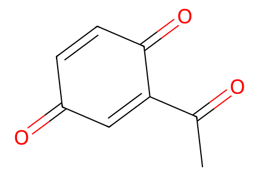
CC(=O)C1=CC(=O)C=CC1=O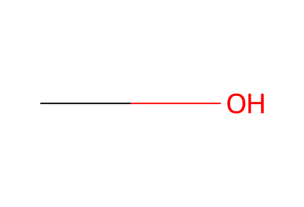
CO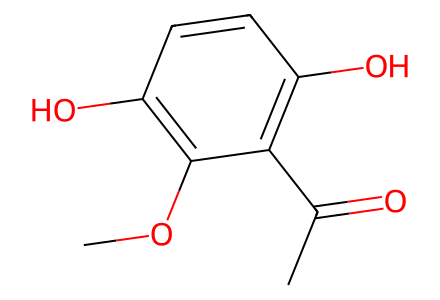
COc1c(O)ccc(O)c1C(C)=O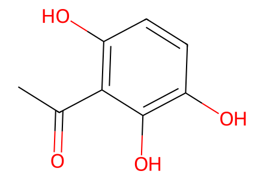
CC(=O)c1c(O)ccc(O)c1O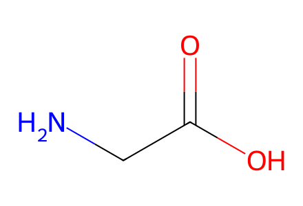
NCC(=O)O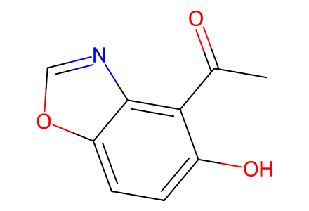
CC(=O)c1c(O)ccc2ocnc12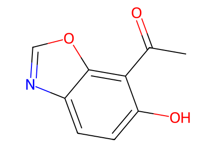
CC(=O)c1c(O)ccc2ncoc12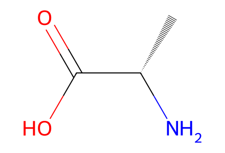
C[C@H](N)C(=O)O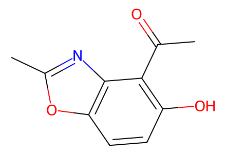
CC(=O)c1c(O)ccc2oc(C)nc12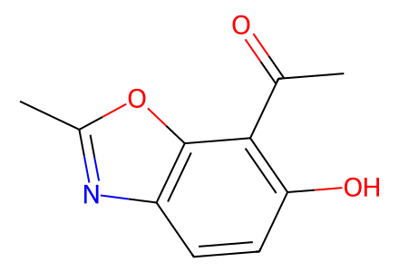
CC(=O)c1c(O)ccc2nc(C)oc12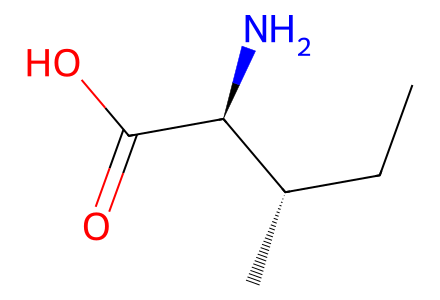
CC[C@H](C)[C@H](N)C(=O)O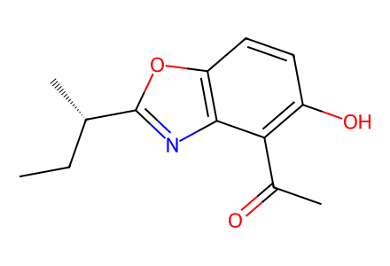
CC[C@H](C)c1nc2c(C(C)=O)c(O)ccc2o1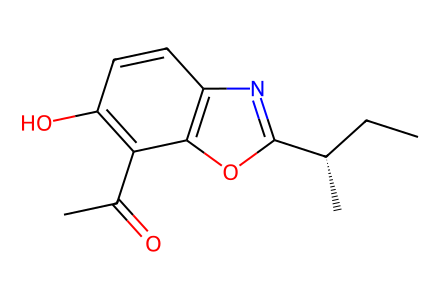
CC[C@H](C)c1nc2ccc(O)c(C(C)=O)c2o1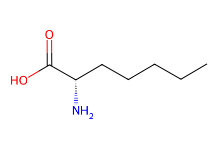
CCCCC[C@H](N)C(=O)O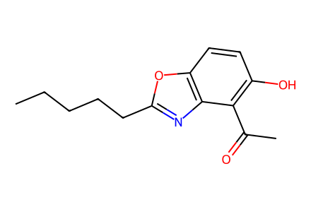
CCCCCc1nc2c(C(C)=O)c(O)ccc2o1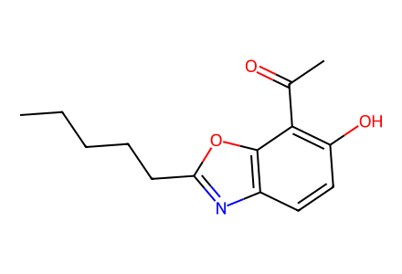
CCCCCc1nc2ccc(O)c(C(C)=O)c2o1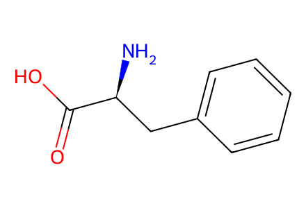
N[C@@H](Cc1ccccc1)C(=O)O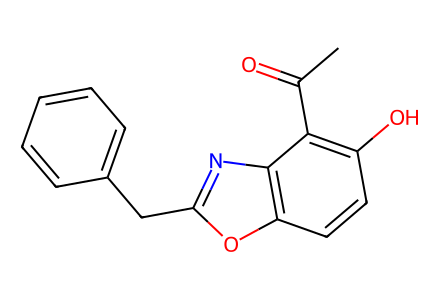
CC(=O)c1c(O)ccc2oc(Cc3ccccc3)nc12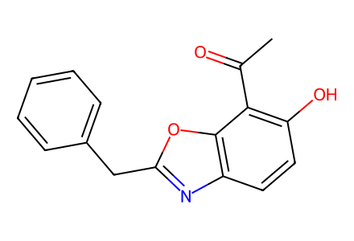
CC(=O)c1c(O)ccc2nc(Cc3ccccc3)oc12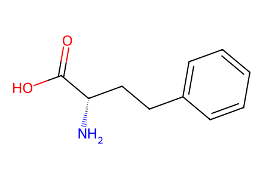
N[C@@H](CCc1ccccc1)C(=O)O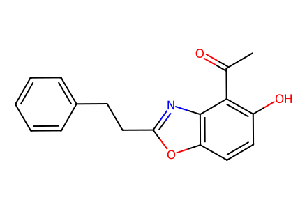
CC(=O)c1c(O)ccc2oc(CCc3ccccc3)nc12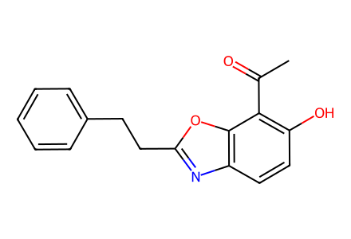
CC(=O)c1c(O)ccc2nc(CCc3ccccc3)oc12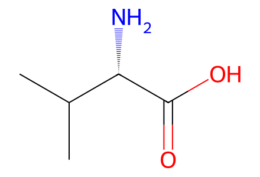
CC(C)[C@H](N)C(=O)O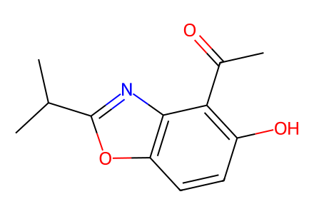
CC(=O)c1c(O)ccc2oc(C(C)C)nc12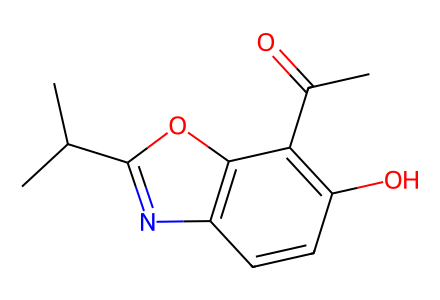
CC(=O)c1c(O)ccc2nc(C(C)C)oc12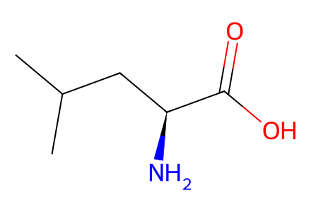
CC(C)C[C@H](N)C(=O)O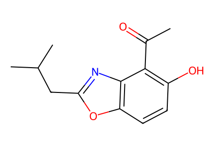
CC(=O)c1c(O)ccc2oc(CC(C)C)nc12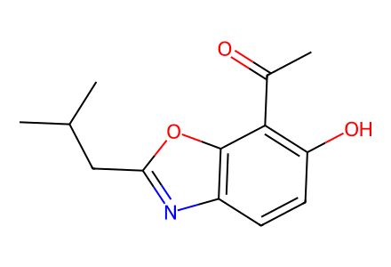
CC(=O)c1c(O)ccc2nc(CC(C)C)oc12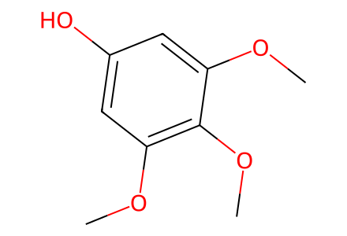
COc1cc(O)cc(OC)c1OC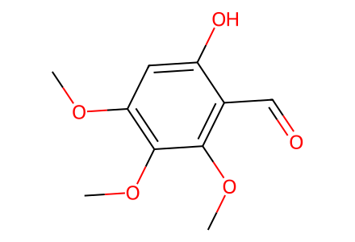
COc1cc(O)c(C=O)c(OC)c1OC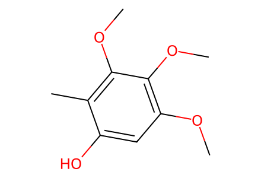
COc1cc(O)c(C)c(OC)c1OC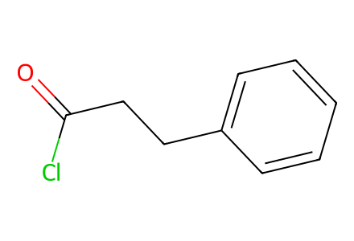
O=C(Cl)CCc1ccccc1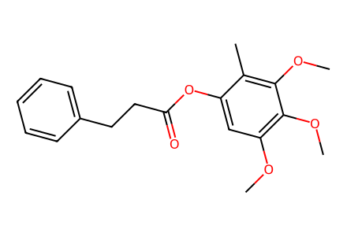
COc1cc(OC(=O)CCc2ccccc2)c(C)c(OC)c1OC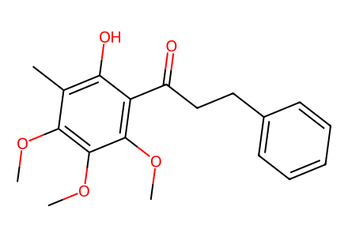
COc1c(C)c(O)c(C(=O)CCc2ccccc2)c(OC)c1OC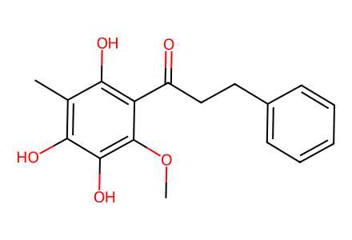
COc1c(O)c(O)c(C)c(O)c1C(=O)CCc1ccccc1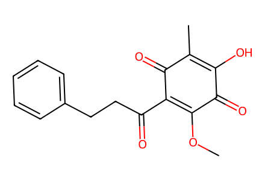
COC1=C(C(=O)CCc2ccccc2)C(=O)C(C)=C(O)C1=O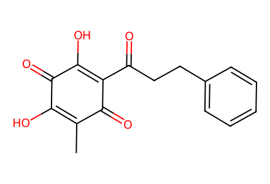
CC1=C(O)C(=O)C(O)=C(C(=O)CCc2ccccc2)C1=O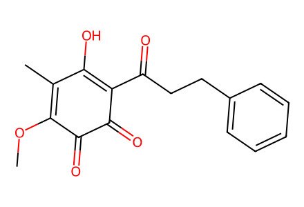
COC1=C(C)C(O)=C(C(=O)CCc2ccccc2)C(=O)C1=O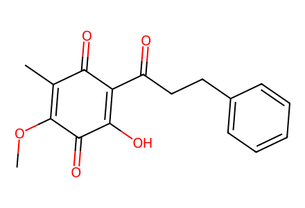
COC1=C(C)C(=O)C(C(=O)CCc2ccccc2)=C(O)C1=O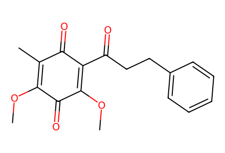
COC1=C(C)C(=O)C(C(=O)CCc2ccccc2)=C(OC)C1=O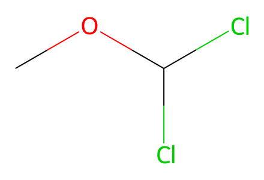
COC(Cl)Cl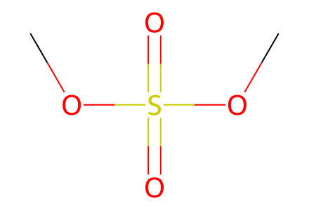
COS(=O)(=O)OC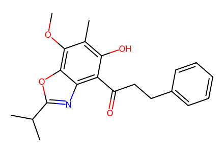
COc1c(C)c(O)c(C(=O)CCc2ccccc2)c2nc(C(C)C)oc12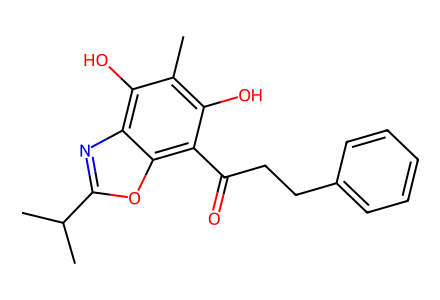
Cc1c(O)c(C(=O)CCc2ccccc2)c2oc(C(C)C)nc2c1O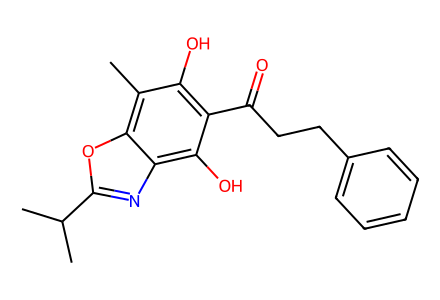
Cc1c(O)c(C(=O)CCc2ccccc2)c(O)c2nc(C(C)C)oc12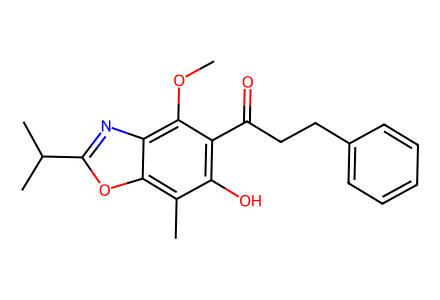
COc1c(C(=O)CCc2ccccc2)c(O)c(C)c2oc(C(C)C)nc12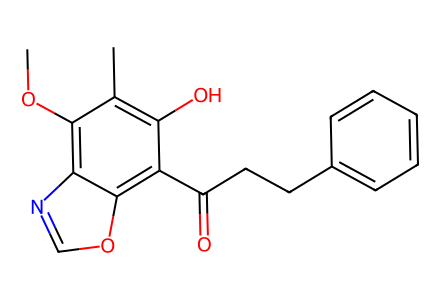
COc1c(C)c(O)c(C(=O)CCc2ccccc2)c2ocnc12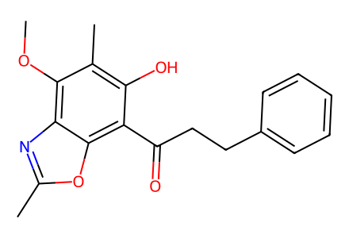
COc1c(C)c(O)c(C(=O)CCc2ccccc2)c2oc(C)nc12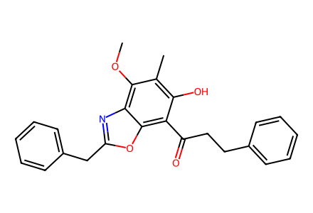
COc1c(C)c(O)c(C(=O)CCc2ccccc2)c2oc(Cc3ccccc3)nc12COc1c(C)c(O)c(C(=O)CCc2ccccc2)c2oc(CCc3ccccc3)nc12COc1c(C)c(O)c(C(=O)CCc2ccccc2)c2oc(C(C)C)nc12COc1c(C)c(O)c(C(=O)CCc2ccccc2)c2oc(CC(C)C)nc12CC[C@H](C)c1nc2c(OC)c(C)c(O)c(C(=O)CCc3ccccc3)c2o1CCCCCc1nc2c(OC)c(C)c(O)c(C(=O)CCc3ccccc3)c2o1